Одиннадцать единиц: от бронеавтомобиля БА-64 образца 1943 года до БРДМ-2. Техника участвует в парадах, выставках и экскурсиях — и заводится.
Редчайшие экземпляры форменного обмундирования времён Гражданской и Великой Отечественной войн и наших дней. В галерее тира — более 40 массогабаритных образцов оружия: от Гражданской войны до вооружения современной Российской армии.
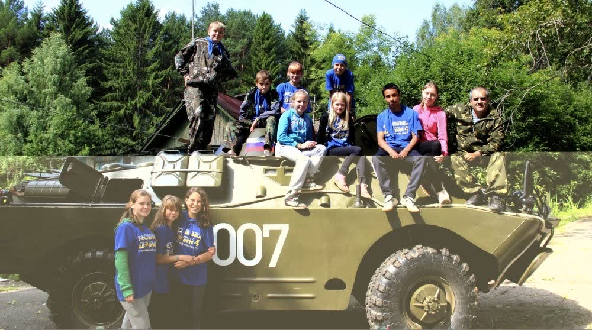
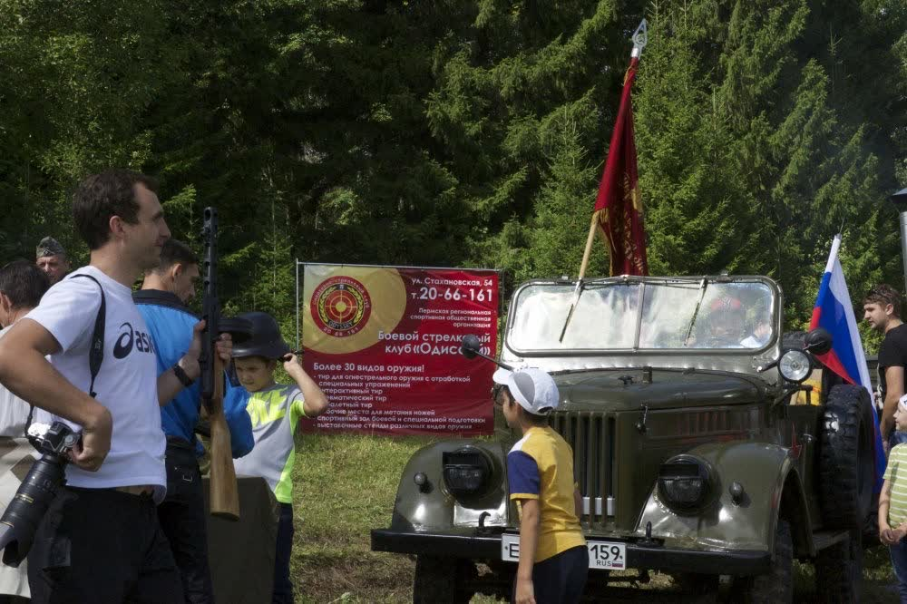
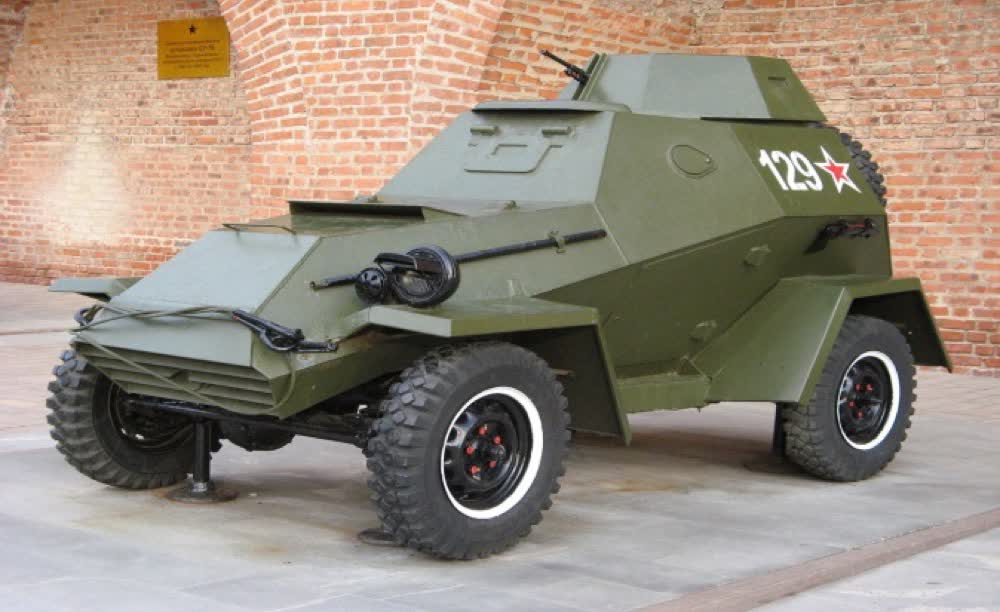
БА-64 (ОБРАЗЦА 1943 ГОДА)— советский лёгкий бронеавтомобиль периода Второй мировой войны.
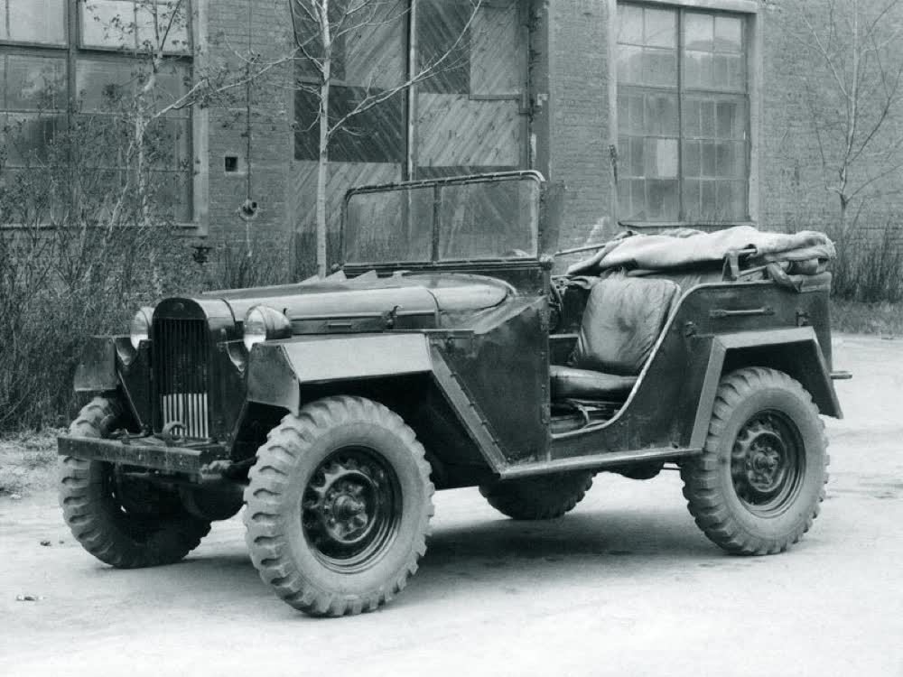
ГАЗ-67 (ОБРАЗЦА 1943 ГОДА) — это один из самых легендарных автомобилей, который наравне с «полуторкой» сыграл важную роль в событиях Великой Отечественной войны.
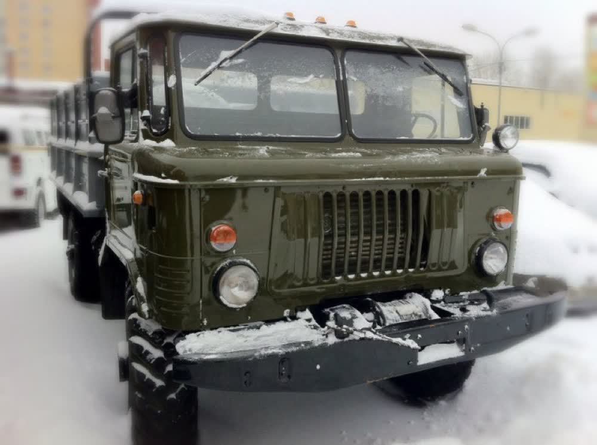
ГАЗ-66 ( ОБРАЗЦА 1990 ГОДА) — этот «всепогодный проходимец» на долгие годы стал верным стальным конем военным и геологам, покорителям целины и нефтяникам, ученым, исследователям и покорителям...
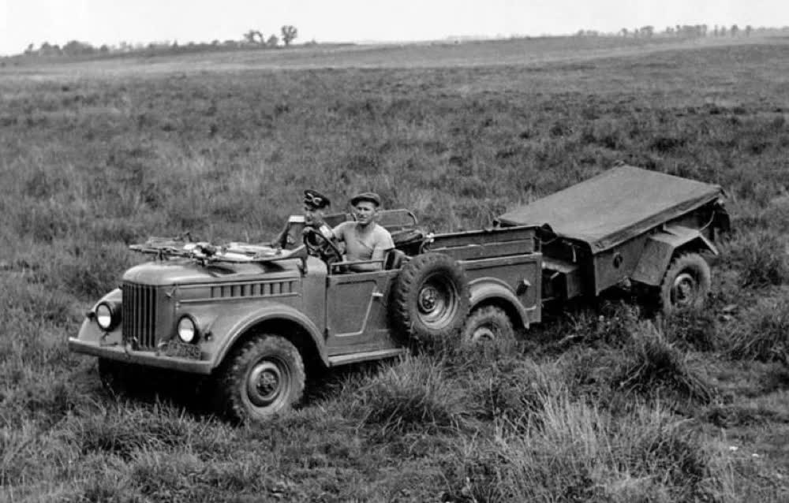
ГАЗ-69 ( ОБРАЗЦА 1952 ГОДА) — наследник командирских джипов времен Великой Отечественной войны, адаптировавшийся к мирной жизни под именем «Труженик».
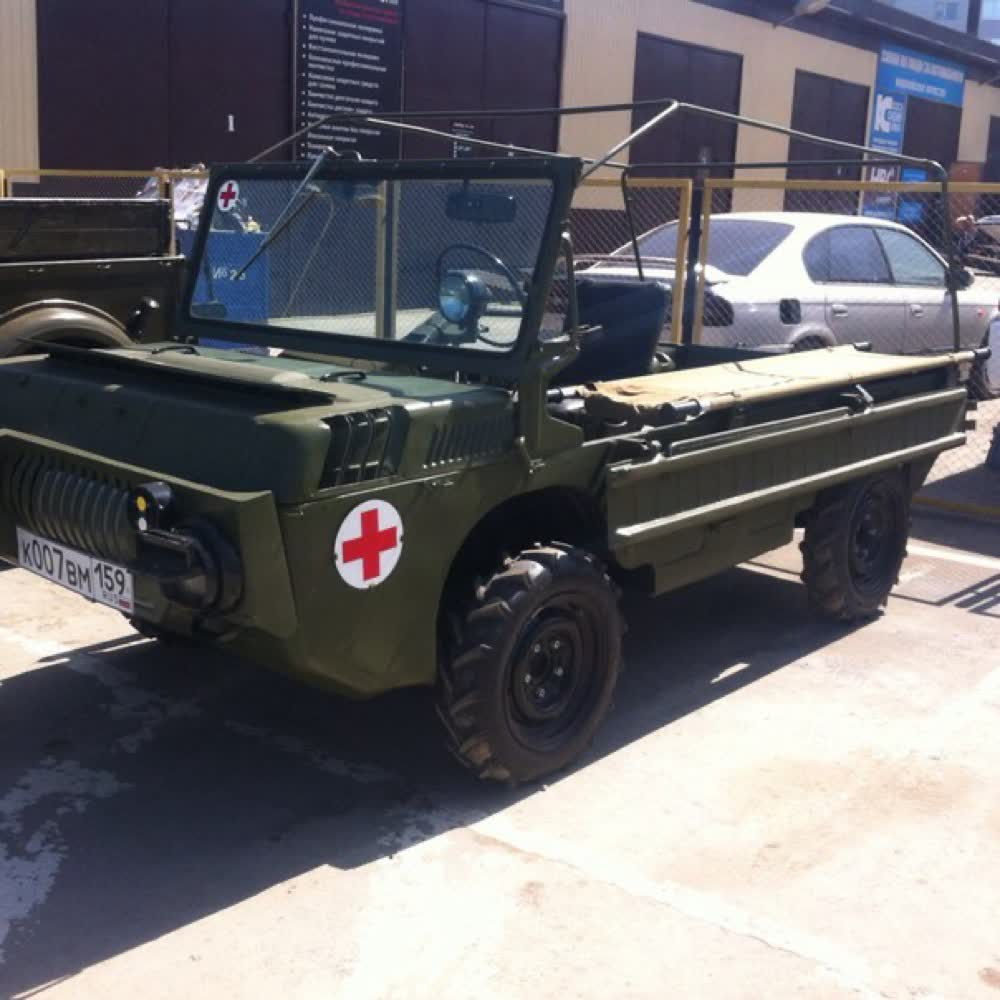
ТПК-967 (ОБРАЗЦА 1984 ГОДА ) Компактный и легкий внедорожник ЛуАЗ-967 в нашей стране гораздо больше известен под своим армейским обозначением ТПК ( транспортер переднего края ).
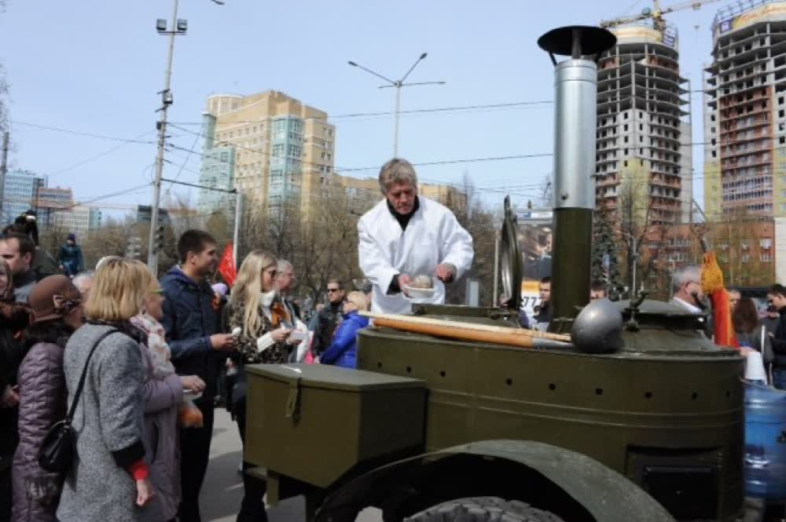
Советская послевоенная походная кухня КП-48 (ОБРАЗЦА 1948 ГОДА) — специальное транспортное средство либо прицеп, предназначенный для приготовления пищи и организации горячего питания личного состава...

М-72 (ОБРАЗЦА 1947 ГОДА), советский тяжёлый мотоцикл. Выпускался крупной серией с 1941 по 1960 год.
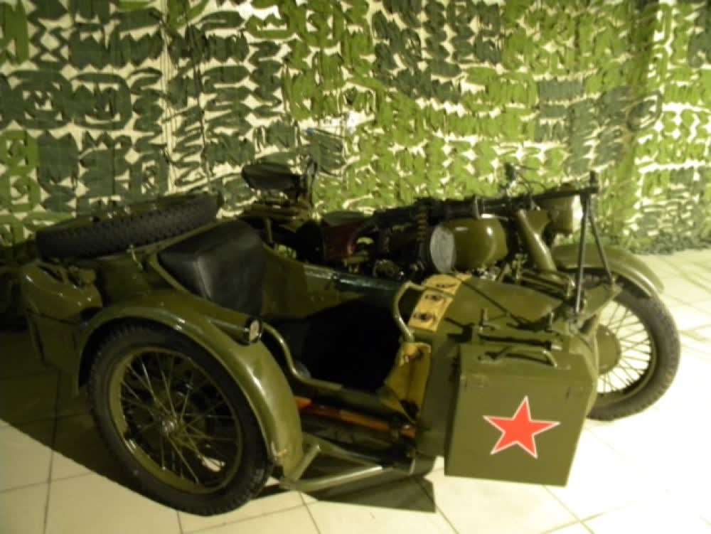
М-72М (ОБРАЗЦА 1956 ГОДА) усовершенствованная модель М-72. С 1956 г. завод перешел на производство этой модели.
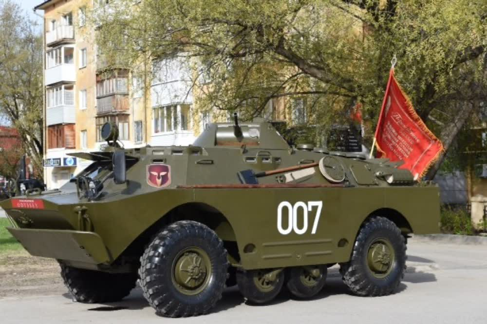
БРДМ-2 (ОБРАЗЦА 1981 ГОДА ВЫПУСКА) Приказом Министра обороны СССР от 22 мая 1962 года бронированная разведывательно-дозорная машина БРДМ-2 была принята на вооружение Советской Армии.
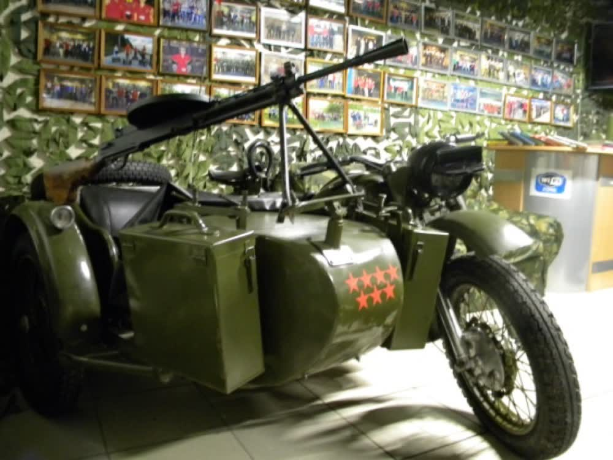
120-мм полковой миномёт образца 1938 года (ПМ-38) — советский миномёт калибра 120 мм. Представляет собой гладкоствольную жёсткую систему со схемой мнимого треугольника.
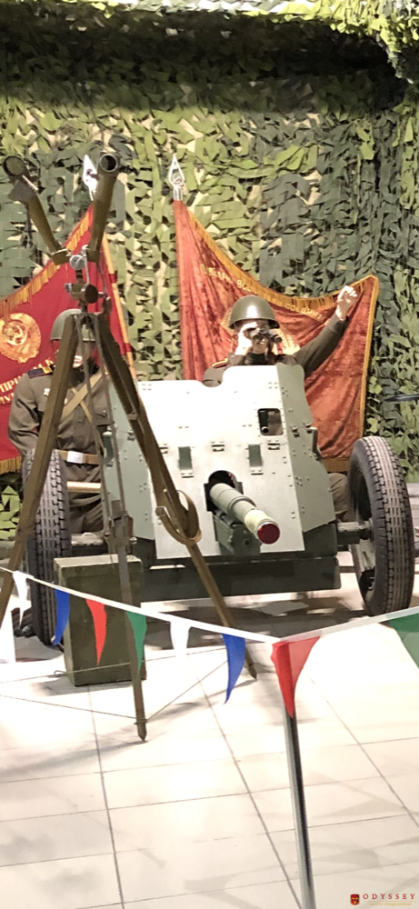
45-мм противотанковая пушка образца 1937 года (сорокапятка, индекс ГАУ — 52-П-243-ПП-1) Советское полуавтоматическое противотанковое орудие калибра 45 миллиметров.
Экскурсии для школ и организаций — бесплатно. Техника на ходу.